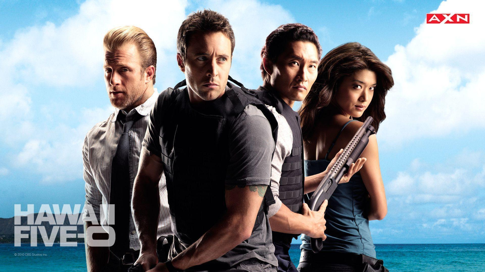

Curiosidades do Hawaii

Hawaii Five-0
Magnum P.I.
- Unicidade: É o único estado dos EUA composto totalmente por ilhas.
- Idioma: O havaiano possui apenas 12 letras no alfabeto.
- Clima: Registrou a temperatura mais baixa dos trópicos: 1,7°C no Vulcão Mauna Kea.